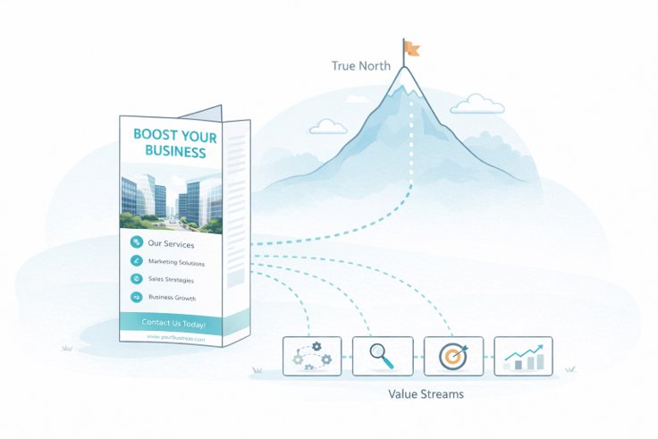
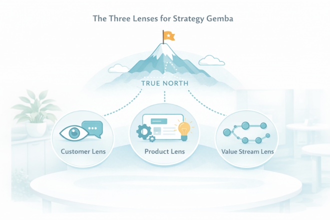
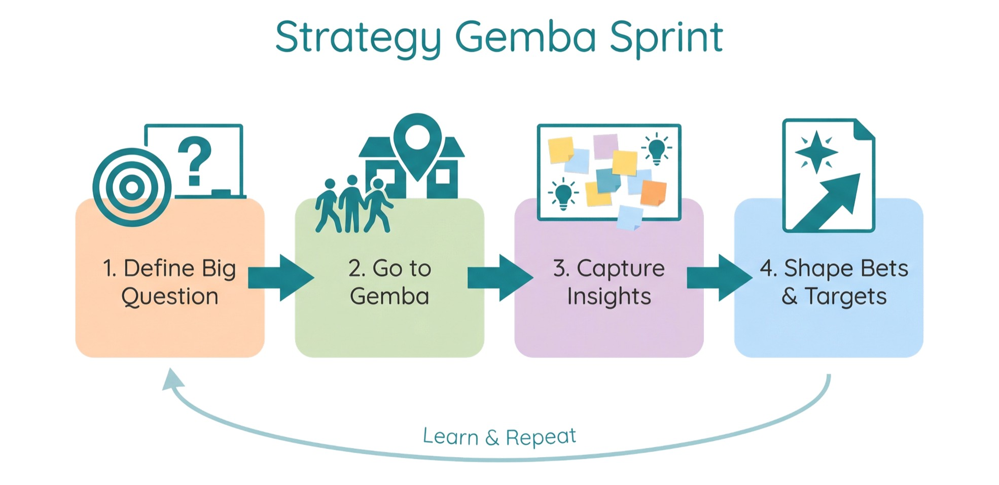
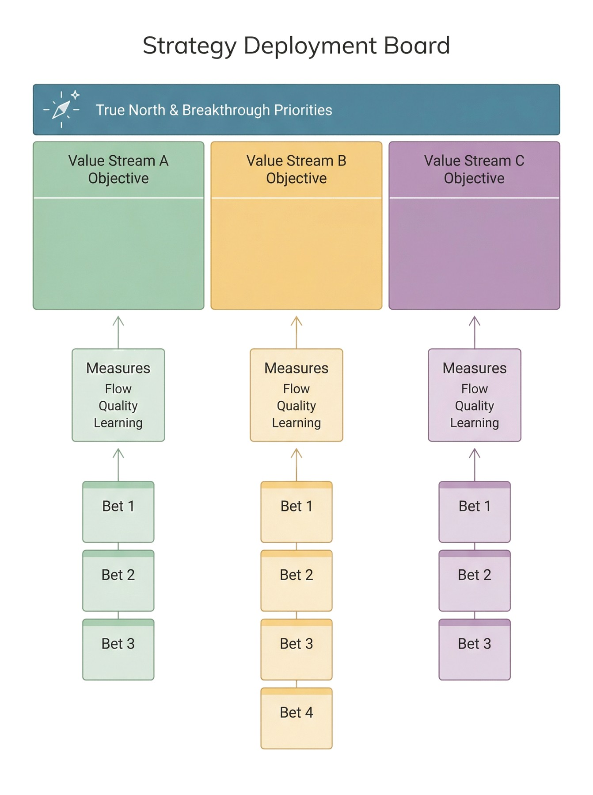
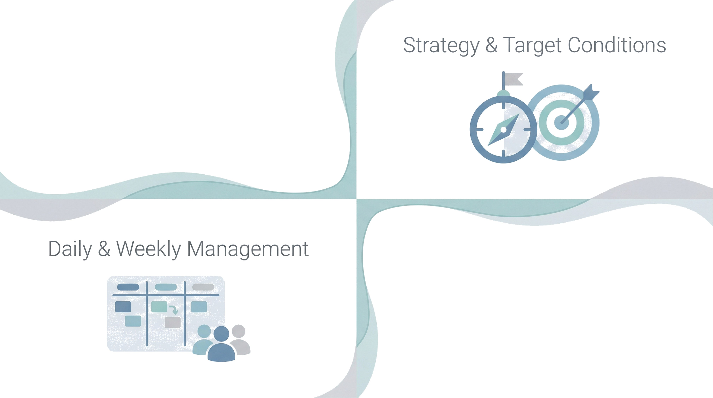
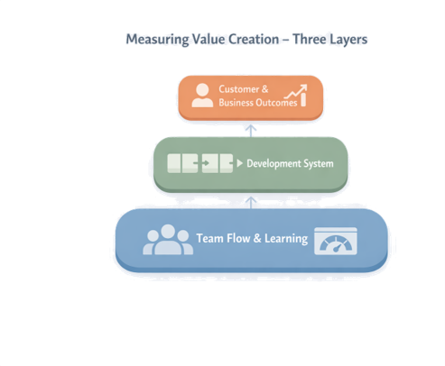
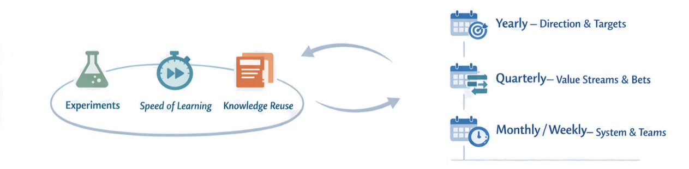

Chapter 3
Designing Where and How We Create Value
Most companies have strategies, roadmaps, and portfolios — yet development teams still struggle to see how their daily work connects to real value. In traditional settings, strategy often lives in slide decks and budget cycles, while product and process development live in separate project plans. The result: scattered efforts, overloaded pipelines, and weak signals about what truly matters.
In LPPD, strategy is not just choosing projects; it is designing how we will create value and learn over time. Strategy becomes something visible and testable — expressed as hypotheses rather than plans, so that every strategic choice carries an explicit statement of what we believe, what we expect to observe, and what would cause us to change course.
"As you read, keep a current product or value stream in mind. Where are we unclear about value? Where are we spreading ourselves too thin? Where is strategy not visible to the people doing the work?"
Section 3.1
From True North to Value Streams
Strategy in LPPD starts with a clear True North and becomes real when it is expressed as a small number of value streams we design and improve on purpose. True North acts as a compass for what kind of value you want to create and what kind of system you want to become, while value streams show where and how that value is actually created.

True North is a concise statement of your long-term direction — the kind of customer value, system performance, and culture you are aiming for. It should be stable over many years, simple enough to remember, and specific enough to guide real trade-offs.
- How you want customers to experience your products and services.
- How fast and reliably you want to turn ideas into launched value.
- How you expect people and teams to work and learn together.
To act on True North, leaders and chief engineers identify the main development value streams (e.g., by product family, platform, or customer segment), link each one explicitly to parts of True North, and decide which streams are strategic and will get focus, capacity, and improvement attention.
The goal: move from "we have many projects everywhere" to "we are deliberately investing in these few value streams because they are our best path to True North."
Framing Direction as Target Conditions
Rather than dropping fixed targets onto teams, LPPD uses target conditions — hypotheses about what a value stream will look like when it is performing well. For each target condition, the team should be able to answer: what are we assuming to be true? How will we know within the next quarter whether we are moving toward or away from this condition? What would cause us to revise it?
- "Reduce concept-to-launch lead time for platform A from 24 to 15 months while improving launch quality."
- "Achieve repeatable integration events every 6 weeks with no major surprises."
- "Stable, cross-functional team structure with clear ownership and visual management."
Section 3.2
Choosing and Framing Portfolio Bets
Strategy becomes real when you choose which bets to make in each value stream. Instead of a long wish list of projects, LPPD portfolios focus on a small number of clearly framed bets that are aligned with True North, sized for learning, and treated as options rather than fixed commitments.
From Projects to Bets and Options
Pretotype Sales Brochure for Each Bet
Instead of a thick business case, each significant bet starts with a pretotype sales brochure — a simple, outward-facing artefact that forces you to explain the idea in customer language before you invest in building it. If you cannot write a compelling brochure that a real customer would react to, the bet is not ready for serious investment.
- Who it is for: A clear target customer segment and the context they are in.
- The problem or job: Short, concrete language from the customer's point of view.
- The promise: Headline + bullets explaining benefits, not features.
- Essentials of the solution: A simple sketch or short list of key capabilities.
- Proof and next step: What signal you want from customers now and how they can respond.
Framing Each Bet as a Hypothesis
Every bet should be expressed as a hypothesis before it receives serious investment. This replaces the traditional business case with a more honest and testable structure.
Hypothesis format
Sizing Bets for Flow and Learning
LPPD portfolios favour smaller, testable slices of work that can fit into the capacity of stable, cross-functional teams. Good LPPD bets are small enough to show progress in months — not years — yet large enough to matter for the value stream's target conditions.

At the portfolio level, a visible map shows how bets connect to value streams and True North — columns by value stream, bets as cards ordered by priority, each tagged with customer/problem, type, and next learning step. This makes it easy to ask: are we overloading some value streams? Are we actually investing where True North says we should?
Portfolios run on a regular cadence (monthly or quarterly) where leaders and chief engineers review bets, evidence, and capacity — deciding continue, pivot, pause, or stop based on learning so far.
Section 3.3
Strategy Gemba and Customer Insight
Powerful LPPD strategy doesn't start in a conference room — it starts at gemba, where value is created and where customers live with your products and services. Strategy gemba keeps leaders, chief engineers, and teams grounded in real problems, real constraints, and real opportunities, so bets are based on insight rather than opinion.
When strategy is built only from reports and slide decks, it drifts toward abstract markets, generic segments, and financial targets. Gemba closes that gap — leaders and key decision makers regularly going to see customers, developers, manufacturing, and service, not to audit, but to understand.
Three Lenses for Strategy Gemba

Lens 1
Customer
Visit customers in their context. Observe how they actually use your products and competing solutions. Listen for jobs, pains, hacks, and aspirations.
Lens 2
Product
Review actual products and variants in use and in development. Look for patterns — where do changes happen late? Where do defects originate?
Lens 3
Value Stream
Walk the development and delivery flow. Notice queues, rework, unclear ownership, and disconnects. Ask where people lose time and where decisions get stuck.
Raw observation is not enough — strategy gemba only becomes useful when you turn what you saw into shared insight that influences bets and target conditions. Immediately after a visit, capture "Seen / Surprised / Questions / Ideas" as a team. Each insight should be explicitly linked to a hypothesis: a gemba visit that reveals a gap becomes the evidence driving the pretotype brochure, not the other way around.
A Simple Play: Strategy Gemba Sprint

Pick one strategic value stream and one big question — e.g., "Why are launches painful?" or "Where is our next big customer opportunity?"
Plan a 1–2 day gemba sprint: customer visits, internal flow walks, and a short synthesis workshop.
Capture 5–10 key insights and 2–3 candidate bets or target condition adjustments.
Feed those directly into your pretotype brochures and the next portfolio review.
Section 3.4
Strategy Deployment (Hoshin Style)
Once True North, value streams, and bets are clear, the challenge is turning them into daily work that people can actually influence. Strategy deployment (Hoshin Kanri) provides a simple way to cascade direction, align teams, and create feedback loops between strategy and execution.

Traditional planning pushes fixed objectives down the hierarchy once a year, then checks variance 12 months later. In lean strategy deployment, leaders instead define a small set of breakthrough priorities and annual target conditions, then use catchball — a structured back-and-forth dialogue — to refine and localize them with the people who do the work.
- Start from True North and the value stream's target conditions.
- Propose 1–3 annual objectives as hypothesis-conditions: what we believe the system will look like if our strategy is working.
- Invite chief engineers and teams to respond with what they can achieve, how they would measure it, and what support they need.
To keep deployment visible, use simple visual strategy boards or X matrices — showing True North, annual objectives per value stream, key measures, major bets, owners, and review cadences on a single page. Placed in obeya and refreshed regularly, this becomes the navigation panel connecting strategy discussions to what teams are actually doing.
Connecting Strategy to Daily Management

Strategy deployment only works when it connects to daily and weekly routines. Teams need to know which hypotheses they are testing on behalf of the strategy. When a team runs an experiment, they should be able to point to the strategic hypothesis it is helping to validate or falsify. Without that link, daily management becomes activity reporting. With it, it becomes evidence accumulation.
A lightweight rhythm:
- Yearly: Define or refresh True North, breakthrough priorities, and value stream target conditions; run catchball to agree on annual objectives.
- Quarterly: Review progress on objectives and bets; adjust bets, support, and constraints based on learning.
- Monthly / bi-weekly: Value stream and team reviews linking strategy boards to flow, quality, and learning indicators; update experiments and countermeasures.
Section 3.5
Measuring Value Creation
To steer LPPD, you need measures that tell you whether your strategic hypotheses are holding up — whether the bets you made are generating the value you believed they would, whether the development system is improving as expected, and whether you are learning fast enough to adjust before wasting significant capacity.

Three Layers of Measures
Layer 1 — Lagging
Customer & Business Outcomes
Adoption, usage, customer satisfaction, complaint/return rates, revenue and margin for new products. Tell you if bets actually created value — but show up late.
Layer 2 — Leading / Medium
Development System Performance
Concept-to-launch lead time, rework and change rates, integration success rate, proportion of projects using pretotype brochures, knowledge reuse across projects.
Layer 3 — Immediate
Team-Level Flow & Learning
WIP per team, cycle time for experiments or A3s, blockage frequency, number of meaningful customer interactions, learning items captured per month.
The key is to link these layers: teams see how improving flow and learning indicators should move system performance, which in turn should move customer and business outcomes. Rather than dozens of KPIs, choose 2–3 customer/business metrics that really matter per value stream, 3–5 development system metrics, and a handful of team-level indicators checked at least weekly.
Measuring Learning, Not Just Output

Because LPPD is fundamentally about learning, you should explicitly measure learning quality and rate. At every portfolio review, ask: for each active strategic hypothesis, what new evidence do we have this quarter? Is that evidence moving us toward confidence or toward revision? If neither, the experiment is not designed well enough.
- Number and quality of customer-facing experiments run per quarter.
- Time from question → designed experiment → result.
- Reuse of knowledge artefacts (A3s, trade-off curves, design standards) across projects.